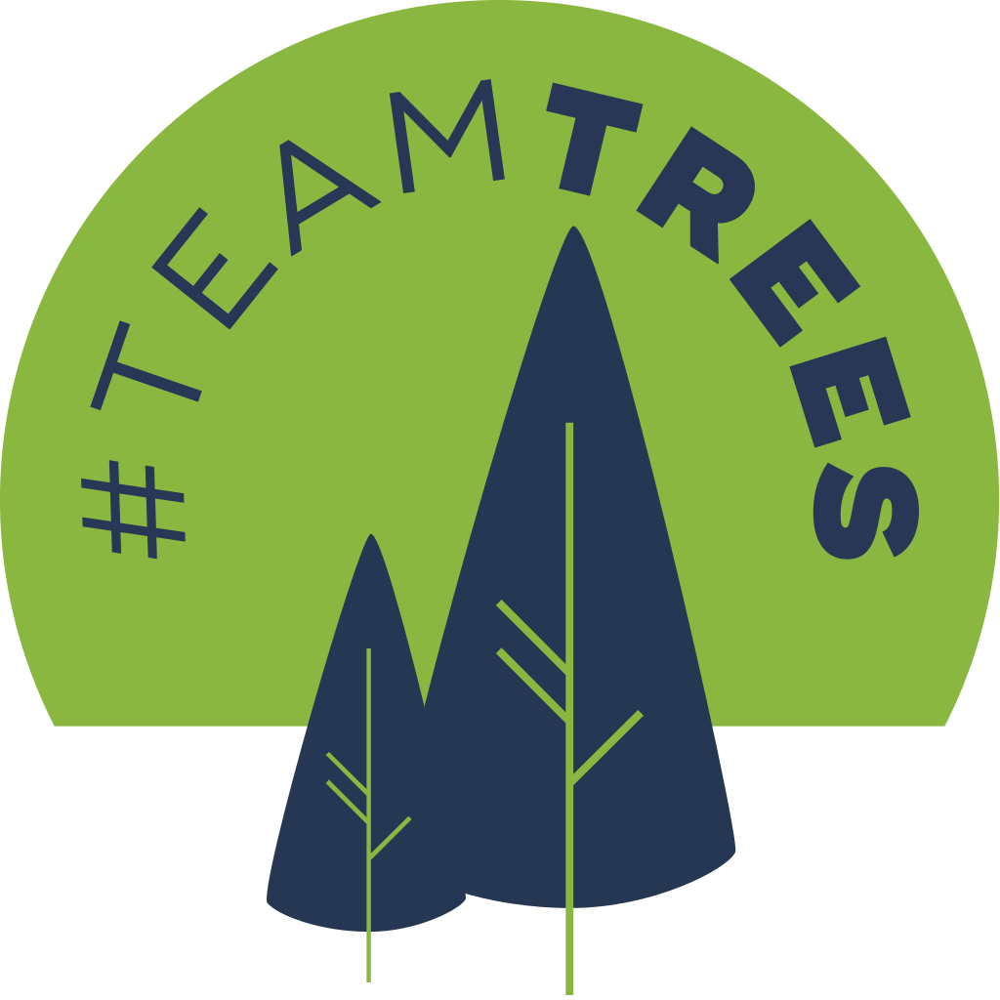

Follow us on Snapchat, Facebook, Twitter & Instagram for daily updates on our projects and achievements towards a cleaner planet.
With big social media outlets such as YouTube influencing people to go green and keep the future of the world in mind.
Because of this multiple influencers have donated to the TeamTrees organisation such as Elon Musk donating 1Million dollars which is the equivallent to 1Million trees.
The TeamTrees non profit organisation have planted millions of trees already and are in the plans of generating money by selling promotional tshirts and jumpers which you can see in the twitter image which also promoting their organisation.
> Creators started #TeamTrees with goal to raise $20M to plant 20M trees by 2020. They’re more than halfway there!
— YouTube (@YouTube) November 1, 2019
On Tuesday we began matching up to $1M in donations on YouTube through the end of 2019. Have you donated yet?
Let's plant some trees! 🌲https://t.co/J9em9INyo8 pic.twitter.com/SKvR8sxQ3n